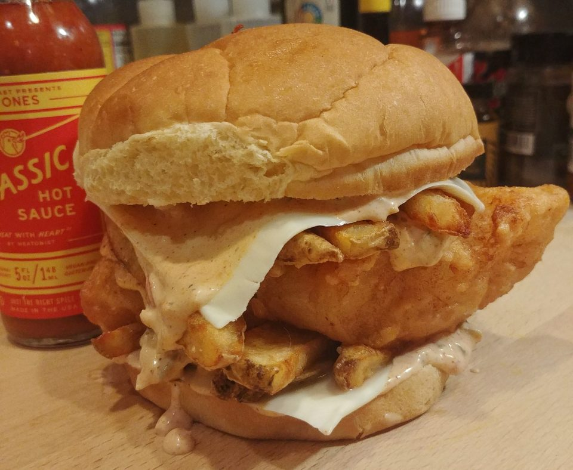

Source: Frank Davis (https://bushwickgrillclub.com/mfdoom-filletorapper/)
Beer battered cod, twice-fried fries, remoulade, hot sauce, & American cheese on a potato roll. This is part of the Cooking The Album project for MF DOOM's MM..FOOD made by Frank Davis
Ingredients
FILLET-O-RAPPER
The following portions make 4 servings/sandwiches
4 portions of Beer Battered Fish & Chips (see recipe below)
4 potato rolls
8 slices American cheese
Remoulade (see recipe below)
Fish & Chips
2 medium russet potatoes
4 medium cod or haddock fillets (about 6-ounces each)
2/3 cup all-purpose flour
2 tablespoons cornstarch
1/4 teaspoon smoked paprika
1/4 teaspoon onion powder
1/4 teaspoon baking powder
1/2 teaspoon hot sauce
1/2 cup Ale or Lager beer very cold (you may need a little more)
Begin by making the fish & chips and remoulade recipes below.
Spread a tablespoon of remoulade on the bottom bun and top with a slice of cheese to assemble the sandwiches
Add a few fries, one piece of cod, and a few more fries
lace another slice of cheese over the fries on top, drizzle a tablespoon or so of remoulade on the cheese, a couple of dashes of hot sauce, and finish with the top bun
Serve any leftover fries on the side
Repeat same steps for the other sandwiches
Fish & Chips
Preparation
Scrub the potatoes well, then cut into 1/4″ thick batons
Dry thoroughly with paper towels and leave them sitting on paper towels to allow the surface of the potatoes to dry out for about 30 minutes
You can skip above step if you're pressed for time, but your potatoes won't turn out as crisp
Mix the flour, cornstarch, paprika, and onion powder in a medium bowl until well combined
Dust each fish fillet with the flour mixture on all sides
Cooking
Chips
Add 1 1/2″ of vegetable oil to a heavy-bottomed pot and heat to 330°F
Line a 2 wire racks with 2 layers of paper towels each
Fry the potatoes in batches until a light tan color and the edges are just starting to brown
Transfer the fried chips to one prepared rack to drain
When the potatoes are done frying, add the baking powder to the flour mixture and whisk together
It's okay if there are still a few lumps, just make sure you do not overmix the batter or it will end up heavy
Fish
Using the same oil, dip the fillets in the same batter and fry them in batches.
Flip the fillets over with tongs when you see the edges start to turn light brown
Transfer to the second prepared rack as they finish frying
Second Frying
When the fish is done frying, increase the heat of the oil to 375 degrees
Fry the chips a second time until they are golden brown and crisp
Drain on a rack and sprinkle with salt
Repeat same step for the fish, serve the fish and chips with lemon wedges or vinegar